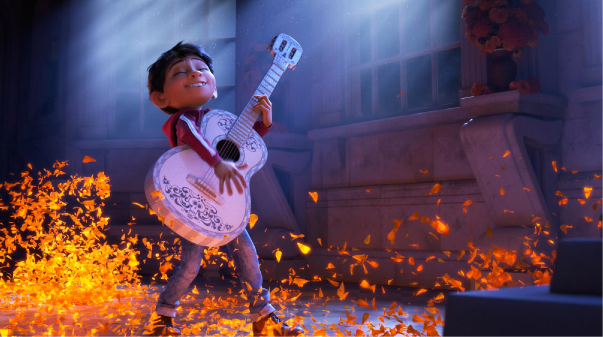

by Michael Simon
Along with the rest of my generation, I adore Pixar movies. I grew up with Toy Story. Monsters Inc was the first film I ever actually saw in the theaters (3 or 4 times to be exact). The Incredibles still makes my jaw drop to this day. Don’t even get me started on Inside Out. And even after all these years, they still have the ability to conjure up an emotional, fun, intricate, original story out of thin air, transporting me from my seat in a movie theater to the wonderful world of a Pixar film. Such is the case with Coco, one of best films that this stellar studio has put out in the last few years. It is also quite possible that part of my adoration for this film is due to the fact that I saw this movie at the exact right moment in my life given some personal circumstances, but more on that later.
Coco is visually beautiful, a usual standard for any Pixar movie, but it really feels like they reinvented the wheel this time. Exploding with light and color and tons of moving pieces, Coco can really only accurately be compared to Monsters Inc in that Pixar has once again created an entirely new world outside of our own for this film. Beyond that, it is the first Pixar movie to simultaneously function as a musical as well, with fun and catchy songs sprinkled through the plot, delivered in a distinct cultural style that just draws you more and more into the world. The best part about the music is that it always serves a purpose; it’s never there as a gimmick or a time filler. The movie would be much worse off without the beautiful songs that accompany it.
The music plays such a key role in the film because, at it’s core, Coco is a story about self-discovery, finding out who you truly are and where you fit in both in the outside world and within your own familial circle. We follow Miguel vthrough this journey as he wrestles with his love for music in spite of his family’s downright detestation for it due to a troubled past with unreliable musicians in the family. Now, Coco draws most of it’s plot from the Mexican Holiday “Dia de Los Muertos” or “The Day of the Dead”. With the fantastical elements at play in Coco, Miguel soon finds himself interacting with the “ghosts” of his community, represented here in skeleton form – some of Pixar’s most intricate character design work to date. Through his journey with these people, Miguel comes to learn all about his family and their connection to the love of music that courses through his veins, and by extension, Miguel himself is slowly able to understand his own place in all of this.
My thoughts on this movie get somewhat more sentimental when thinking about how Miguel deals with his interactions amongst his deceased family members. The heart behind the movie is one of deep family love passed on from generation to generation and the impact that loved ones are capable of making that can transcend the plagues of time and even transcend life itself to some extent. Coco makes it clear that the love of a family can never truly disappear in death so long as a memory is kept alive; in that way, perhaps the ones we have loved and lost never truly leave us at all. We see the best of our loved ones shine through in ourselves through the connections that forever link us together. Through the legacies that they leave behind, and the memories we hold within us, they remain a constant part of the lives we lead each and every day. To quote the film itself, “know that I’m with you the only way that I can be”.
What else can I say? This movie is just what I needed right now. So thank you Pixar, for always being there to bring me home.